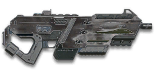

← Back to the CB-ARX Newton comparison
← Back to the CB-ARX Newton comparison
Sage Guide · Nanite Systems Operatives · Light Assault / Engineer
The reward for completing the Master Carbines directive: an auraxium CB-100 rebuilt around one trick — a 1.0° hipfire cone that does not widen when you move, crouch, or fly. No optics, no grip, no excuses — just the tightest hipfire of any carbine.
The one-line verdict: 714 RPM and 143 damage in a 26-round magazine, with hipfire so tight it stays a 0.14 m ring at 8 metres whether you stand, strafe, or drop out of the sky. Its price is the aimed game: a 0.5° cone and a 1.25× zoom with no optic to buy — at range it is the least accurate carbine you own. Fight close, keep moving, and never stop to aim at what the hip already hits.

The CB-ARX Newton · Nanite Systems · 26-round magazine · Master Carbines directive reward
You earned this gun by auraxiuming five carbines — 1,160 kills each — to complete the Master Carbines directive. It is not for sale for certs or Daybreak Cash, and it takes no optic attachment of any kind. Everything on this page is written for the veteran who did that grind: the numbers assume you already know how to aim, strafe, and pick a fight.
Every enemy infantry has 1,000 health (500 shield + 500 health). Your bullet does 143 damage up close, fading to 112 at long range. Headshots count double, leg shots count less (×0.9). That gives you three numbers worth memorising:
| Range | Damage | Head | Chest | Legs | Chest vs shielded Heavy |
|---|---|---|---|---|---|
| Close · 0–15 m | 143 | 4 | 7 | 8 | 11 |
| Mid · 15–53 m | 143→125 | 4 | 8 | 9 | 12 |
| Far · 53–80 m+ | 125→112 | 5 | 9 | 10 | 13 |
Perfect-accuracy times to kill: 4 headshots ≈ 0.25 s, 7 chest shots ≈ 0.50 s up close. Maximum damage per second is 1,702 — a top-tier carbine rate, if you land the rounds. The breakpoints are exact: 7 chest shots to 15 m, 8 to 52.7 m, 9 past that; 4 headshots hold all the way to 52.7 m. In real fights you'll land maybe half your rounds — still, this is why the head matters so much on this gun.
Full power to 15 m, then a steady slide to minimum at 80 m. The gold line shows Soft Point Ammunition, which stretches full power to 20 m.
One gun, four fighting styles. The right technique changes with distance — use the range finder below to see what your bullets do at any range, then learn the four bands underneath it.
How to fight hereAim down sights at the upper chest and neck. Fire in bursts of 5–8 — your recoil climbs into the head for free damage.
Aim: centre of the chest, from the hip. Keep moving.
Scoping in costs you time (150 ms to raise the sight) and a quarter of your move speed — at arm's length that gets you killed, and it buys you almost nothing: the hip cone is already 1.0°, a 0.14 m ring at 8 m (section 04). Strafe side to side (A/D) while firing so you're hard to track. As a Light Assault, this is also your jetpack range — fly over him and hose down from above; the cone stays 1.0° even while you're falling.
Aim: neck / upper chest. Bursts of 5–8 rounds.
This is where the gun earns its keep: full 143 damage, fast handling, and a 0.50 s chest kill. The honest choice here is yours: hipfire still lands (the ring is only 0.26 m wide at 15 m), so stay mobile and hose him down — or aim, halve the cone to 0.5°, and start your crosshair at the neck so the upward climb walks shots into the head. Four head hits end the fight in a quarter of a second. Strafe while scoped; you're slower, but a moving target still beats a still one — and on this gun strafing costs no accuracy at all.
Aim: chest. Bursts of 5–8 rounds, pause between them.
Damage is sliding toward 125 and your cone of fire blooms if you hold the trigger. Fire a burst, release for a split second to let accuracy reset, fire again. The recoil climbs up with a slight random lean either way (angle ±5°), so pull your mouse gently down and be ready for a small sideways step. Crouch or stand still when you can — not because it tightens the cone (it doesn't on this gun), but because a still shooter controls the climb better.
Aim: chest. Taps of 3–5 rounds at exposed targets only.
At 112 damage you need 9 chest shots, and your aimed cone is only 0.5° with a 1.25× zoom and no optic to help you place them — a long, loud advertisement of your position. Take these shots at stationary or fleeing targets, medics reviving, and engineers on turrets. Otherwise, your better play is to close the distance behind cover, or — as a Light Assault — over it. Knowing when not to shoot is a skill too.
Your accuracy is decided by two things before skill even enters it: what your body is doing (your stance sets the starting cone of fire) and what your finger is doing (holding the trigger grows that cone with every shot). The Newton has no fire-mode switch — full-auto only — so "firing modes" are something you do with your finger, not a setting on the gun. And it has one quirk no other carbine has: your stance barely matters.
| Stance | Starting cone | What it means for you |
|---|---|---|
| Sprinting | 2.5° | Maxed out — the widest the cone can be, and still tighter than most carbines' standing hipfire. Never start firing from a sprint anyway: give the gun its 0.3 s to settle first. |
| Hipfire, moving | 1.0° | Walking or strafing from the hip. Identical to standing still — moving costs you nothing. This is the whole gun. |
| Hipfire, standing | 1.0° | Your point-blank default. The 0.14 m ring at 8 m in section 04 is this stance drawn out. |
| Hipfire, crouched | 1.0° | The same 1.0° — crouching buys you no accuracy on this gun, only a smaller target profile. Crouch to be hard to hit, not to shoot straighter. |
| Hipfire, airborne | 1.0° | Falling or jetpacking keeps the same 1.0° cone. A Light Assault dropping onto a roof is as accurate as a Light Assault standing on it. |
| Aimed (ADS), feet planted | 0.5° | Half the hip cone — but only half. Most carbines aim ten times tighter than they hipfire; this one aims twice as tight. That is the trade you made. |
| Aimed (ADS), strafing | 0.5° | Same tight start as planted — the moving floor, not "still + bloom". You move at 0.75× speed while aimed, but the cone never notices. Strafe during bursts, not just between them. |
| Mode | How your finger does it | Use it at |
|---|---|---|
| The mag dump | Hold the trigger and don't let go | Point blank only, or suppressing a doorway. Bloom maxes the hip cone after 15 shots — and the whole magazine is gone in 2.1 seconds. |
| Bursts — the default | Hold for 5 rounds, release ~0.15 s, hold again. 6–8 rounds is fine while you're learning | Almost everything, 8–50 m. Each release resets the cone, so every burst starts at 0.5° aimed or 1.0° from the hip. |
| Tap-fire | Short taps of 3–5, or single clicks, with a real pause between | 50 m and out, at exposed or stationary targets. Slow, but every round goes where the dot is. |
There is no free window on this gun: the cone starts growing with the very first shot. Aimed, your standing and moving cones are both 0.5°, so the strafe window is 0 shots — there is nothing to use up, because moving never widened the cone in the first place. From the hip it is the same story: 1.0° standing, 1.0° moving, 0 shots of window. Do not read that as a weakness — it is the opposite. On an ordinary carbine, strafing costs accuracy and you pay for it in misses; on the Newton, the ADAD strafe is free. Aimed bloom caps at a 3.0° cone — and at 0.05° per shot you'd need 50 shots to reach it, more than the 26-round magazine holds, so you cannot max out the aimed cone in one magazine (it ends at 1.75°). Hip bloom is faster, 0.10° per shot, and caps at 2.5° after 15 shots. Recoil is a 0.25° vertical climb per shot with 0.25° of sideways jitter either way (tolerance 0.5°), the first shot kicks 2.65× as hard (0.66°), and recovery runs at 20°/s — pull down, expect a small sideways step, and let the cone reset between bursts.
A target 30 m away, aiming down sights. Press and hold FIRE (mouse, touch, or hold Space with the button focused) and watch the holes walk wider the longer you hold — that's firing from an ever-growing cone. Release, let the cone reset, fire again. Aim for bursts of 5; 6–8 is tolerable while you're new. This practice window is shared by the whole Sage series: it's driven by a weapon profile plugged into the window — here the Newton's (714 RPM, 0.5° starting cone, 0.05° bloom per shot, target at 30 m) — and the spread is drawn at true scale from those numbers.
Cone of fire — fills as you hold, empties when you release.
Your bursts will be graded here — green at 5 rounds, tolerable up to 8.
Some things are easier to show than to say. Here's what your bullets actually do: how wide hipfire spreads at 8 metres, what a good burst rhythm looks like, and what aiming down sights really changes on a gun with no optic. The hands-on version — holding the trigger yourself — is the practice window in section 03.
A full-size target 8 m away — an arm's-length room fight. The rings show where rounds land around your aim point (the chest). Sizes are drawn to scale from the gun's real cone-of-fire numbers — and on this gun, the honest story is how small they are.
Read it this way: the hipfire ring is 0.14 m wide — a fist, not a torso. Standing, strafing, crouching, even falling, it is the same ring, which is why this gun hipfires where other carbines must aim. The Laser Sight shrinks it to 0.09 m — a real gain, but a small one on a ring this tight already. Aiming halves it again to 0.07 m, which is the whole ADS payoff: half a degree for 150 ms and a quarter of your speed. Only sprinting makes a real mess of it (0.35 m) — and even that is tighter than most carbines manage standing still. (Ring sizes use the real geometry: spread diameter = 2 × distance × tan(cone ÷ 2).)
Every shot widens your cone of fire ("bloom"). Releasing the trigger for a heartbeat resets it. Same 18 rounds, two very different outcomes:
The target pattern is bursts of about 5 rounds — that's the ideal. Bursts of 6–8 are fine while you're new (call it newbie tolerance). Past that, the bloom (0.05° per shot aimed, 0.10° from the hip) keeps growing with every shot, so the extra bullets mostly decorate the wall behind your enemy instead of hitting him. Short bursts also leave you rounds for the second enemy — remember, the magazine is only 26, and 18 rounds is more than two-thirds of it.
No zoom, no sight picture — just the target at 35 m, small in a wide-open view. On most guns this is a guess. On the Newton the hip cone at 35 m is 0.61 m wide, still roughly torso-sized, so the guess lands far more often than it has any right to.
Same target, same 35 m — but he looks only a quarter taller, framed by plain iron posts. The zoom is 1.25×, not 2×, and there is no optic to buy that improves it. Aiming halves your cone to 0.5°; it does not transform the sight picture the way a real scope would.
That's the whole sight decision, and it costs 0 certs because there is nothing to buy: hipfire for awareness and movement, irons for the head at 25–50 m. If you came here expecting a 2x sight recommendation, this is the gun telling you it doesn't have one.
Old guides will tell you directive weapons take no attachments. That was true before the March 2022 Arsenal Update — it isn't anymore. The Newton takes attachments in the barrel, rail and ammo slots. Two honest limits: there is no optic of any kind for this gun, and there is no grip, no compensator and no High Velocity Ammunition — nothing you can buy controls the recoil or extends the range. Everything below is an optional sidegrade, not an upgrade. Buy in the order shown and stop whenever the gun feels right. Every buyable attachment costs 100 certs (or 49 Daybreak Cash).
Plain iron posts with a 1.25× zoom. What the directive hands you — and the only sight this gun will ever have.
Good: everything, because there is no alternative to compare it against.
Bad: picking out targets past 50 m, where a 2x sight would earn its keep on any other carbine. Section 04 shows exactly what you get instead.
The gun as issued: full 480 m/s velocity, full 15 m of maximum damage, no penalties anywhere.
Good: your first weeks, and honestly most of your career. Every barrel on offer trades something real for something narrow.
Bad: nothing — there's no downside to an empty slot.
Hipfire bloom grows 40% slower (0.10° → 0.06° per shot) — steadier hip spraying. But vertical recoil rises 20% when you do aim (0.25° → 0.30° per shot).
Good: a dedicated close-quarters build paired with the Laser Sight, where you barely aim at all.
Bad: general play — it taxes the aimed shooting you'll do at 25–50 m, and the hip cone is already 1.0°.
Hides your muzzle flash so your own view stays clear at night — but you appear on enemy minimaps from 15 m farther away when you fire.
Good: night fights where your own flash blinds you. A comfort pick, nothing more.
Bad: as an early purchase — it changes no fight outcome. Buy it last, if ever.
Muzzle flash and firing noise reduced, and you no longer appear on the minimap when firing. Cost: bullet velocity drops 15% (480 → 408 m/s) and damage starts falling off 20 m sooner.
Good: flanking as an Engineer or a Light Assault who needs to stay off the minimap while working a point.
Bad: as a default — on a gun whose full damage only reaches 15 m, "falloff 20 m sooner" is the harshest suppressor tax in the game. You feel it in every duel past arm's length.
The default underbarrel: fires a non-lethal grenade that knocks back you and enemy infantry on impact. Toggle it with the Gear Slot 1 hotkey. It adds 0.25 s to your equip time while fitted.
Good: Light Assault mobility — fire it at your feet mid-jump for extra height and distance — and shoving a rusher off a point hold. This is the rail slot's highest-skill option.
Bad: if you want the Laser Sight instead — you can't have both. It also costs you 0.25 s of draw speed.
Hipfire accuracy improves by a third (33% tighter cone: 1.0° → 0.67° standing, a 0.09 m ring at 8 m). Replaces the underbarrel — you can't have both.
Good: nearly always, since you hipfire more than you aim on this gun. The one attachment that leans into what the Newton already is.
Bad: if you live on the Impulse Launcher — the mobility play gives up this accuracy for movement, and that's a fair trade either way.
A torch whose beam reveals cloaked infiltrators. Toggle it with the attachment key (X by default).
Good: hunting a stalker infiltrator camping your capture point — sweep corners with it.
Bad: as your everyday rail — it gives zero accuracy help, and the beam advertises your position.
A single-shot underbarrel shotgun round. Adds 0.25 s to your equip time while fitted; toggle with the Gear Slot 1 hotkey.
Good: a point-blank panic button when a target rounds the corner inside your reload.
Bad: as a habit — one shell, a long switch, and it costs you the Laser Sight or the Impulse Launcher. The 26-round magazine is the problem this doesn't solve.
Underbarrel smoke grenade launcher. Adds 0.25 s to your equip time while fitted; toggle with the Gear Slot 1 hotkey.
Good: covering a revive, a point capture, or a retreat across open ground.
Bad: as your everyday rail — it fires smoke, not damage, and it costs you the Laser Sight or the Impulse Launcher.
Full 143 damage now reaches to 20 m instead of 15 m (the gold line on the chart above). Cost: bullets fly 10% slower (480 → 432 m/s).
Good: nearly always — most duels happen at 10–20 m, exactly where this extends your 7-shot / 4-headshot kill.
Bad: long-range duels against runners, where the slower bullet needs more lead. A small price.
0 certs · Day one
What the directive hands you. Bare — but the gun underneath is already a top-tier close-range carbine. Learn the hipfire and the impulse jump on this before spending anything.
200 certs · Recommended
The best value in this whole guide. The tightest hipfire in the game, tightened further, with full damage out to 20 m. Covers every fight from a doorway to a tower courtyard.
300 certs · Indoor brawler
Built to hipfire down stairwells and hold a capture point room: slower hip bloom, a tighter cone, and full damage to 20 m. Swap back to the All-Rounder outdoors.
100 certs · Light Assault mobility
For the Light Assault who fights from the rooftops: jump-jet plus impulse knockback for height and distance, firing down into a 1.0° hip cone that never widens while you fall. Weak in a straight stand-up fight — so don't stand still.
On most carbines, aiming is worth the 150 ms and the slower feet because the cone shrinks tenfold. Here it shrinks twofold — 1.0° to 0.5°. Inside ~20 m, don't pay the price: keep moving at full speed, keep the hip cone, and spend the saved time shooting. Aim only when the headshot matters more than the movement.
Headshots deal double damage: 4 kills up close versus 7 to the chest. Don't aim at the head directly — aim at the neck and let the gun's natural upward climb carry shots two and three into the skull. It's the single biggest damage upgrade you own, and it's free.
Every shot widens your cone of fire, from the very first one — there is no free window on this gun. Holding the trigger past ~8 rounds at range means later bullets fly around your target, not into it. Five rounds is the ideal burst; release the trigger for a heartbeat between bursts — your accuracy resets and your hits per magazine roughly double.
Your magazine holds 3 perfect chest kills up close (7 shots each) — realistically 2, with misses. That is the gun's whole economy: never dump a magazine on one doorway, and reload the moment a fight ends, behind cover. The short reload is 1.8 s, the long reload 2.2 s — fast, but 2 seconds is still a lifetime with an empty gun in a room full of enemies.
As a Light Assault, the default underbarrel is a movement tool first and a weapon second: jump, fire the impulse at your feet, and ride the knockback to rooftops and angles no other class reaches — then shoot down into a hip cone that stays 1.0° while you fall. As an Engineer, the same blast shoves a rusher off your turret or your point. Learn the timing in VR before you trust it in a fight.
Your damage, hipfire and mobility all shine at close-mid range. Sprint between cover, use buildings and rocks as stepping stones, and arrive at your range before opening fire — or, as a Light Assault, arrive above it. The player who chooses the range usually wins the duel — make it you.
Every gun has a price. Here's where the Newton pays — and the habit that covers each hole.
Three perfect kills per magazine, two realistic ones — and a held trigger empties it in 2.1 seconds. Every other 143-damage carbine carries 30 or more.
Play around it: burst discipline (habit 3) and counting (habit 4). Reload early and often; the 1.8 s short reload is fast, and an empty gun is the only thing on this page that gets you killed outright.
A 0.5° cone, a 1.25× zoom, plain iron posts — and no optic exists to buy. At 50 m your aimed spread is still 0.44 m wide, and the target is barely magnified. Every other carbine aims tighter than this.
Play around it: don't fight the gun's nature — close the distance (habit 6) instead of duelling at range, and tap-fire at exposed targets only when you must.
Your first shot kicks 2.65× as hard as the rest (0.66°), on top of 0.25° vertical recoil per shot and a 0.25° sideways jitter that can lean either way. In a long burst your aim walks off the target's head fast.
Play around it: pull your mouse down while firing and expect the small sideways step. There is no grip or compensator to buy your way out of it — the climb is yours to manage, every burst.
480 m/s is already on the slow side for a carbine, and your two most popular attachments make it slower: Soft Point drops it to 432 m/s, the Suppressor to 408 m/s. Moving targets at 40 m need real lead.
Play around it: lead runners by a body width at 40 m, more with Soft Point fitted. Or close the distance until lead stops mattering — which is where this gun wants you anyway.
Past 53 m you're at 9 chest shots, 13 against a shielded Heavy, with bloom fighting you the whole way. Snipers and battle rifles own that ground.
Play around it: Soft Point buys you 5 m of full damage (habit: section 05), and tap-fire at exposed targets only. Spend the rest of the time closing distance — on foot, or over the rooftops.
There is no forward grip, no angled grip, no compensator and no High Velocity Ammunition for this gun — you can't silence the climb or buy your way to longer range the way other carbine owners can.
Play around it: win the fair fight instead: positioning, the hipfire cone that never punishes movement, and a magazine budget spent in 5-round bursts. The gun's strength was never the attachments.
Open the world map, travel to VR Training, and run these on the target dummies. Five minutes before a play session beats an hour of dying confused.
Aim at a wall 20 m away and empty a full magazine without touching the mouse. Watch the bullet pattern climb up with its small sideways jitter — that's your gun's fingerprint. Repeat, this time pulling down, until the group stays fist-sized.
Walk the dummy range keeping your crosshair glued to neck height the whole time, snapping to each new target without dipping to the floor or sky. Slow and clean first; speed comes on its own.
At 30–40 m, kill dummies with bursts of 5–8, releasing the trigger fully between bursts. If a burst goes wide, shorten it. Goal: whole kills without a single wild round — and a kill per 7–8 rounds, not per 15.
Pick a dummy, stand 5 m away, and circle it with A/D while hipfiring it down without stopping. This is your point-blank survival skill — and on this gun the cone doesn't care that you're moving, so the only thing being tested is your tracking.
As a Light Assault, jump-jet above a dummy and hipfire it down while you're falling — then land and do it again from a different angle. Feel that the cone stays 1.0° in the air: the drop shot is a real technique on this gun, not a prayer. Engineers: run the same drill from a rooftop edge, dropping off and firing on the way down.